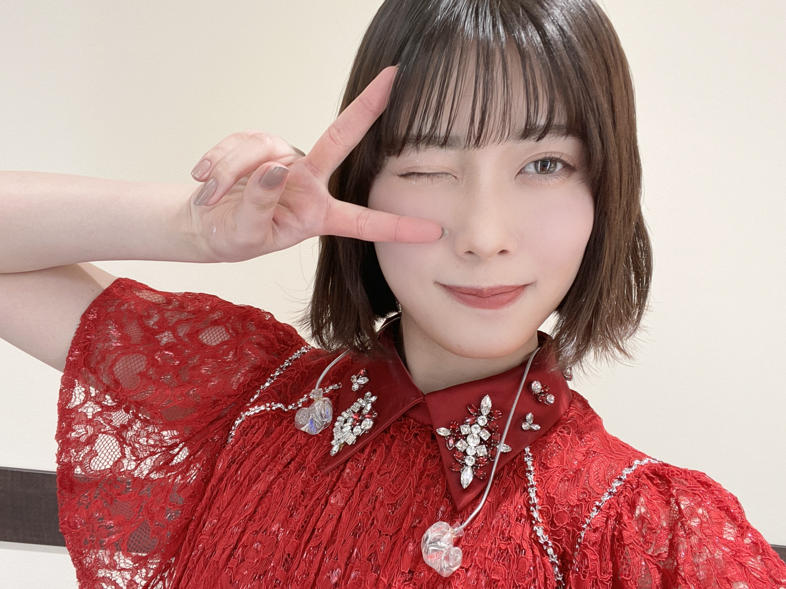
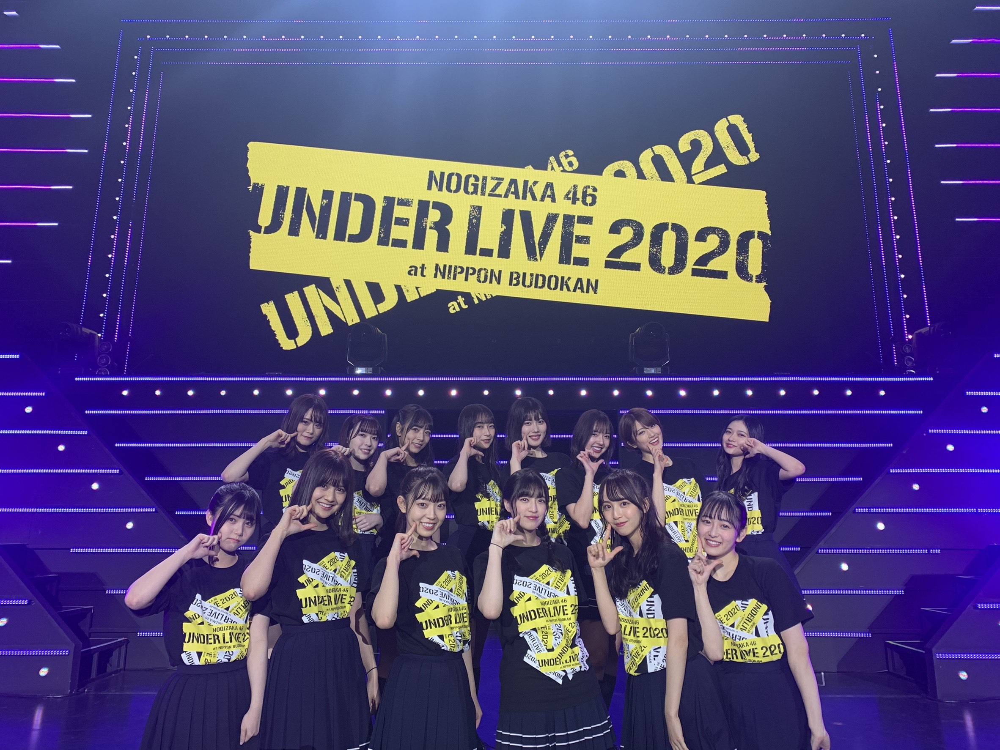
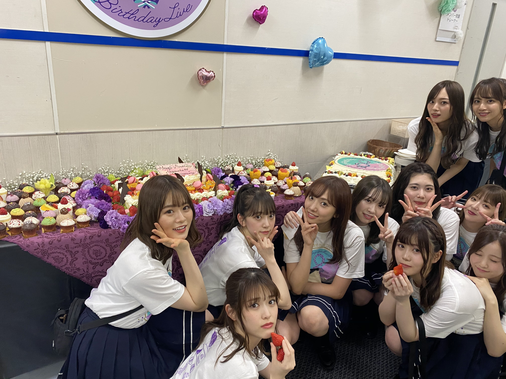

2020/1226Satすてきなみっかかん
こんばんは！
伊藤純奈です


ぴーす！
まず最初に
アンダーライブ2020
無事に終了致しました！
会場に足を運んでくださった
みなさま、配信で応援してくださった
みなさまありがとうございました☺︎
久々にみなさんに直接会うことが
できて本当に嬉しかったです〜
みんな元気そうでよかったあ
感染対策もしっかりしてくださって
本当にありがとうございました！
スティックバルーンでの
応援も嬉しかったよ〜〜
ひとつになれた感じがして
これぞライブ！！ってテンション
あがりました☺︎
タオルやサイリウムありがとう！
後ろの方までみえてたよ〜！！

本当に本当にありがとうございました！
またライブが普通にできる
生活に戻れるようみんなで
気をつけていきましょう...！
お話変わって
じゅんが去年出演してた
舞台「オリエント急行殺人事件」の
再演が明日27日までやっているので
すが、やっと観に行けました！！
じゅんが演じてたアンドレニ伯爵夫人は
松井玲奈さん♡とってもとっても綺麗で
素敵なアンドレニでした〜〜うっとり
しちゃいました。
今でもセリフを結構覚えてて
なんだかうれしかった☺︎
前回共演してた
マルシアさん、宍戸美和公さん、
室龍太さん3人のお芝居みて
あ〜〜懐かしい〜〜しびれる〜！！
ってなりました！！！
いいなあお芝居って...！！
「8th YEAR BIRTHDAY LIVE」
のBlu-ray＆DVD発売中です☺︎
感想おしえて〜〜

昨日はクリスマスだったね〜♡
毎年おうちでまったりなので
今年もおうちでまったりでした！
みんなはなにした？？
2020/12/26 19:24


コメント(317)
いも焼酎届いた？
アンダラ最高でした！
アンダーライブ3日間お疲れ様でした！
私は2日目に参戦しました！初のアンダーライブだったし声も出せない状況だったのでどんな感じのライブになるのか全くわからなかったけど最初から最後までずーっと楽しめました！スティックバルーンを曲に合わせながら叩くのも会場で一体感が生まれて楽しさ倍増でした！今年はもう会えないしライブも行けないと思ってたから純奈ちゃんのパフォーマンス見てたくさん元気を貰いました！本当に純奈ちゃん可愛かったです☺︎
アフタートークも楽屋覗いてる感じがしてメンバーのオフの姿が見れて嬉しかったです！
純奈ちゃんのサンタの衣装後ろにリボンついてて可愛かったね〜！！！
りりあちゃんから貰ったジェラピケのポーチ私もお揃いのやつ買っていいですか？
また14人でプレゼント交換できるといいね
(機会があったら！！笑)
純奈ちゃんが可愛過ぎてたっくさん癒されたのでもうなんでも頑張れちゃいます☺︎
来年もアンダラが無事に開催できる事を願ってます！本当におつかれでした！
純奈ちゃん大好きです♡
純奈可愛いー！！
クリスマスに教習所で初運転したんだけどブレーキとアクセルと周回の繰り返しで完全に酔いました。
これから不安です
良いお年を！！
てんま
武道館でノンストップ最高でした。純ちゃんお歌流石すぎます。もっと聞きたいと改めて思いました。またいつかライブが開催されて、お歌聴けるのを楽しみにしています。
バースデーライブはまだ見れてない…！正月になったらゆっくり見るよ〜
アンダラ見たよ！かっこよかった！
大好きだよ～
とも
またライブができる日を楽しみにしてます！
クリスマスは、イヴに新しい案件を頼まれてずっと仕事してました笑
まだまだ忙しいと思うけど体調気をつけてね
アンダラ最終日おうちで母と見ました。ほんっとにかっこよかったです。この感想直接言いたくなったからミーグリ4次で応募しました
当たってるといいな〜
クリスマスはバスラ3日目を見てました！じゅんちゃんのソロがかっこよかったです！！
釣り堀のソロがほんとによかった～
純奈ちゃんの歌声大好きだから、ソロだとずっと純奈ちゃんの歌声聞けてめっちゃいいね( ¨̮ )
クリスマスはケーキとチキンとか食べたよ～
とも
アンダーライブ3日間お疲れ様でした！！！！☺︎
直接は会えなかったけど3日間配信みました！！！☺︎
毎日じゅんなちゃん髪型が違ってて全部似合ってて本当に可愛かったです！嫉妬の権利と左胸の勇気のセンターもめっちゃよかったよ！！☺︎
8th Year Birthday Live4日間ともみました！！！
もうじゅんなちゃんの歌声が好きすぎて涙が止まりませんでした！ 早くじゅんなちゃんの生歌ききたいです！☺︎
来月のミーグリ楽しみです！！☺︎
早くじゅんなちゃんとお話ししたい！！☺︎
じゅんなちゃんだいすき！！！！☺︎
バースデーライブのBluRay買いました！純奈ちゃんのお歌が素敵で何回も見ています～♪釣り堀のソロ、とても良かったです！
まずはアンダラお疲れさまでした〜♪
幸運にも3日間現地で見れたよ〜
色々話したいことあるけどなにより純奈ちゃん美しかった！
ミーグリでたくさん話させてくださいっ
オリエント急行はやっぱり純奈ちゃん思い出しちゃうよ〜。
また舞台にも出てくれたら嬉しいですっっ
バスラも純奈ちゃんのとこ中心に見てるよ〜
たくさん話したいことあるのでミーグリよろしく〜♪
いつもありがとう！
アンダラお疲れ様！3日目しかみれなかったけど、純奈センターの嫉妬の権利は本当に嬉しかったしすごかった！最高でした♪
オリエント急行懐かしく感じる…あの時はもう純奈が美しすぎて美しすぎて、、、、って感じで私は純奈にうっとりしてたよ笑
バスラの感想はね、やっぱり印象に残ってるのは釣り堀と、もし君がいなければかな。歌やっぱり好きだなぁって感じた
昨日クリスマスだったね〜！プレゼント交換会したよ！はぁって言うゲームあげたら、めちゃ喜んでくれたの笑笑
体調には気をつけてね〜
りちょ
8バスの感想と合わせてミーグリでお話しするね〜！！
そしてアンダラお疲れ様！
配信だったけど初日だけ見れたよ~
狼に口笛をでセンターしてる姿かっこよかった！
いつの日か普通の日常に戻ってちゃんと会場で純奈ちゃんが輝く姿を見たいな…
オリエント急行観に行ったのね！
玲奈ちゃんと会うのはかなり久々だったんじゃないかな？
マルシアさん達ともお話出来たのかなぁ~
純奈ちゃんのお芝居も見たいね~
配信サービスでセラミュが公開されたし年末年始のお休みにも入ったからゆっくり見ようと思ってるよん笑
クリスマスはお仕事納めだったからお仕事してた笑
チキン食べてないしケーキも食べれなかったぁ…
これから年末にかけてまた寒くなるから体調には気をつけてね！
紅白楽しみにしてる~
それじゃあまたね~
ばいばーい
お菓子作りは大好きなので、またやりたいです！
アンダラも最高でした！
メッチャ輝いてました。
風邪を引いちゃっているので、クリスマスは自宅療養です。。
薬のせいか、メチャクチャ眠いんだよね。。
会場には行けなかったけど配信で見てたよー！
次は会場で見れることを楽しみにしてるね！
そしてアンダーライブ ご苦労さまでした。
残念ながら当たったのに見にいかせてもらえず１人
悔しんでました。
家族に年寄りがいる為兄弟に行かせてもらえませんでした。
しばらくは我慢が続くと思いますが頑張りましょう。
更に応援しますね。また、投稿しますね。
可愛い可愛いお写真いっぱいありがとう〜☺︎☺︎☺︎
アンダラ3日間ともすごい素敵でした。
同じ景色やっと観れたね(*´ω`*)
凄く幸せでした。
お疲れ様でした！
バスラはもう純奈ちゃんがMVP。間違いなく。
純奈ちゃんのパフォーマンス好きすぎます。
純奈ちゃんが出てるところ何回も繰り返し観てます！！
クリスマス純奈ちゃんがワクワクしてて癒されました(´,,•ω•,,｀)♡
最高だったよ！
バスラの感想は、純奈無双です
アンダーライブ見れなかった
けど、次のライブは絶対みます！
楽しみにしてます
クリスマスは部活の先輩と同い年で過ごしました！
私は寮生活なので家族と過ごせませんでしたが、とても楽しく過ごせました〜
純奈はクリスマスケーキは食べましたか？
年末ももっと寒くなると思うので体調に気をつけて頑張ってくださいね！
応援しています
2020.12.26 明後日☀️
アンダーライブ、本当にお疲れ様でした！！！
僕は、配信での参加でしたが、改めてアンダーの良さが感じられた3日間でした！！！
純奈さんセンターの嫉妬の権利、最高にかっこ良かったです！！！
オリエント急行、一年前でしたね！純奈さんの舞台を初めて観たのが、オリエント急行だったのでキャストは違ってもこうしてまた舞台があるって本当に嬉しいですね！！
8thバスラはこれから年末年始にかけてじっくり見たいと思います！
純奈さん
体調には気をつけて下さいね！
バスラは純奈ちゃんの存在感がとにかく凄かった、。純奈ちゃんの歌声に惹き込まれて、気づいたら涙びしょびしょでした 笑
「純奈の歌超カッコよかった」って声が色んなとこで聞こえてきて、私までめちゃくちゃ誇らしくなりました 宇宙一の推しメンです☺︎
クリスマスは私もお家でまったりした〜〜！一緒や〜 笑
年末年始大変だと思うけど体調には気をつけてね ♀️
こんばんは。
クリスマスは部屋でひとり。
合鴨のローストを食べました
とっても素敵な純奈ちゃんがキラキラ輝いていた3日間でした！
全日全部感動して泣いちゃった！
3日目は現地で純奈ちゃんを見れたことほんとに幸せだなって改めて感じました☺︎ うちわ見てくれた気がして嬉しかったです！
バスラ見てました！純奈ちゃんのお歌とっても素敵な歌声で号泣してました！たくさんの幸せをありがとう！！！！
来年はミーグリよろしくね☺︎
ブログ更新ありがとうございます！
アンダラ配信で見ました！！
お疲れ様でしたー！
来年は1月2月3月にミーグリ宜しくお願いします！！
良いお年をお迎えください！！！
まだまだ予断が許されない中、アンダラ開催していただき本当に感謝です！
19日と20日現地で見ました！やはりLIVEは最高です♪個人的には狼に口笛を で前でずっとパフォーマンスしてる純奈ちゃんに釘付けになりました！
本当に素晴らしい時間をありがとうございました
アンダラお疲れさまでした
開催できたのはホントに奇跡だと思います
感動をありがとうございました
体調にはくれぐれも気を付けてください
犬夜叉と七色いんこの演劇の配信で
純奈ちゃんのファンになりました！
地方に住んでいるのでアンダラは自宅で視聴していましたが
ほんっっっとうに最高のステージをありがとうございます。
自由に、安全に旅行ができる日常が戻ってきたら
生で歌って踊る純奈ちゃんを必ず観に行きます！！
アンダーライブお疲れ様！！！すごくすごくたのしかったみっかかんでした（ ; ; ）❤︎ 口ほどにもないkissの歌詞が頭の中でずっと流れてる〜〜〜〜
バスラの純奈ちゃんの'釣り堀' 感動しました(;_;)(;_;) 純奈ちゃんはやっぱり歌が上手いなと改めて思いました。
純奈ちゃんだいすき〜〜〜〜〜☺︎☺︎♡
声を出さなくてもみんながかっこよくて可愛くて面白くて大満足でした！ありがとうございました！
じゅんちゃんかわいいです
最終日しか視聴出来なかったけど良かった❗️
やっぱ乃木坂はライブが1番似合うなって思った。
最終日のアフター配信後、蘭世とは和解した？（笑）
ハイテンションのウインクピース＼(^o^)／♡♡♡
そしてアンダラ改めてお疲れさまでした
全部見たよ！755にも書いたけど、やっぱり初日の「君僕」のじゅんのソロパートの「不甲斐なさに」のキレイな裏声に感動したよ(´；ω；｀)
またライブ披露できたら良いよね＼(^o^)／
舞台の再演も面白そうだな
じゅんは皆と会えて、こっちも嬉しいよ♪
そっか、バスラもそろそろ見なきゃ(｡>﹏<｡)（笑）
これからも頑張って(/･ω･)/
オリエント急行のまつれなさんとの縁、素敵ですね！
アンダラ、左胸と嫉妬のセンター良かったです！
特に赤衣装の嫉妬、ひめたんと堀ちゃんの
Ｗセンターとはまた違う、紅の情念みたいなものを
感じられて、ぞくぞくしました！
全体を通して、アンダーメンバー、そして
２期生全員のパフォーマンスの
力強さと美しさの素晴らしいこと！ただただ感動！
またあのパフォーマンスを見られる機会が楽しみです！
アンダラ最高でした！
千秋楽しか現地行けなかったけど、嫉妬の権利・左胸の勇気センターすごく良かったよ
あと、あと、DoMyBestの｢呪文のように〜｣にやられました
ずっと武道館はステージ見やすくて、アンダラ中はずっと純奈さん目で追ってたよ
めっちゃ楽しかった！ありがとう。
こみやさん。
アンダラ２日目行ったよー
じゅんちゃん髪型ですぐ見つけられた！
アンダラのパフォーマンスは相変わらずアツくて、
ほんと行って良かった
それと新しい形の応援であるスティックバルーン、
ファン側としても楽しくて、今後もありだなぁって思ったよ
とても感動しました！特にその女。
ライブ終わりからその女ずーーと聞いてます。
純奈ちゃんセンターの嫉妬の権利もカッコよかったよー。大好きでーす。
スティックバルーンパンパン楽しかったです。
今できる最善の形でしたね。
純奈コールできなかったことが残念です。
わんちゃんの名前はなんですかーーー？ワン
！！！！！！！！！！！！！！！！！！！！！！！！
舞台女優としての純奈ちゃんがとても大好きです。あの舞台上で輝く姿を早く観たいです。
大変な努力の結果なのに見たい見たい、と軽率なことを言っていることをここにお詫びします。
！！！！！！！！！！！！！！！！！！！！！！！！
今年も、ありがとうございました。年明けすぐにミーグリ参加予定です。よろしくお願いします。
よいお年をお迎えください。
三日目に現地で見させていただきました！
個人的に純奈ちゃんの狼に口笛をのパフォーマンスが素敵すぎて釘付けでした
楽しいライブをありがとう！そして本当におつかれさまでした！
コメントする